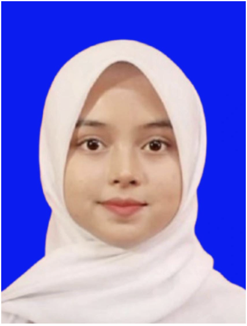

Halaman profil ini
Memberi gaya pada struktur yang sudah lolos audit, memakai warna yang saya turunkan dari foto saya sendiri.
Dimulai .
Turning Code into Solutions & Movie Plots into Inspiration.

Halo halo selamat datang di website profile saya! perkenalkan nama saya Fathin Nishrina Nurul Auliya, seorang mahasiswi di Universitas Islam Indonesia dengan jurusan Informatika. Saya berasal dari Kota Militer yaitu Cimahi, Jawa Barat. Website ini, hasil dari yang sedang saya pelajari, dibuat untuk menampilkan profil pribadi saya dan karya-karya yang telah saya kerjakan selama berkuliah di Universitas Islam Indonesia.
| Kegiatan | Peran | Waktu |
|---|---|---|
| Praktikum PABW | Peserta | |
| AISEC Future Leaders | Peserta | |
| Kepanitiaan Porsematik | Sekretaris OC |
Memberi gaya pada struktur yang sudah lolos audit, memakai warna yang saya turunkan dari foto saya sendiri.
Dimulai .
Proyek pengembangan platform web interaktif yang berfungsi sebagai media pendidikan informal untuk menstimulasi komunikasi positif antara orang tua dan anak usia 4–9 tahun. Platform ini dirancang untuk mendukung ekosistem belajar mandiri di rumah, memanfaatkan fitur edukatif kolaboratif yang melatih kecerdasan emosional, budi pekerti, dan keterampilan sosial anak melalui interaksi langsung dengan orang tua di era digital..
Dimulai .
saat ini saya masih belajar, tetapi saya cukup menguasai bahasa pemrograman Python dan Java.
Saya telah mengerjakan beberapa proyek selama kuliah, seperti pembuatan halaman web untuk kelas terbuka, desain UI/UX menggunakan Figma, dan pengembangan aplikasi desktop berbasis Java. Anda bisa melihat kode dan detailnya di menu Portfolio atau akun GitHub saya.
Isi formulir berikut. Semua kolom bertanda wajib harus diisi.